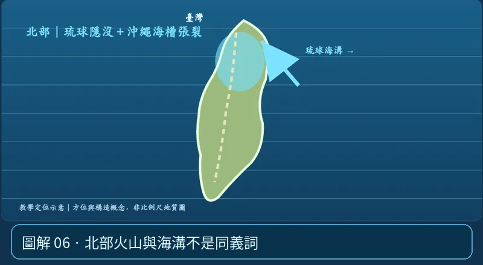

第 06 單元｜圖解 6/6｜課本 p.89–92（總測 p.93–99）
北部火山與海溝不是同義詞
大屯火山群與龜山島周邊的火山現象，涉及東北臺灣隱沒與張裂的複雜地質背景；不是說臺灣全島都坐在一條相同的火山弧上。
① 看一眼② 操作圖③ 自己推理④ 揭開解答
🔬 這張圖，請自己動手試
操作圖上方的頁籤、滑桿或按鈕；圖片也能左右滑動放大觀看。
互動圖解 · 北部火山與海溝不是同義詞

原創 SVG 地科教學模型，方便理解，非真實比例、非即時地震資料；互動無法載入時仍有靜態圖。
STEP 01 · 先觀察
👀 眼睛先找線索
北部圖先找隱沒作用，再想沖繩海槽後弧張裂，理解火山不一定只會在一個簡單海溝正上方。
💡 為什麼是這樣？
北臺灣火山與琉球隱沒、後弧伸張等複雜地球動力條件有關，不能畫成整個臺灣都坐在同一條火山弧上。
🎯 換個問法想一題
「整個臺灣都在同一條單純的火山弧上」是合理概括嗎？
我想好了，點開看答案 ↓
不合理。臺灣各區的板塊構造差異很大。
⚡ 一句記住：為何北部有火山